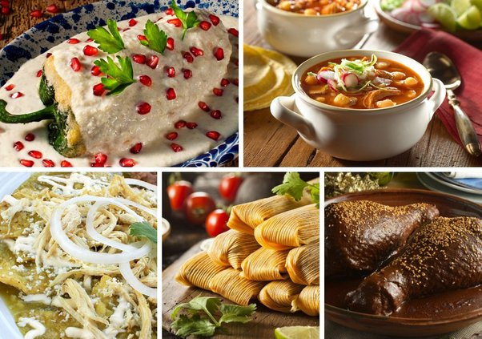
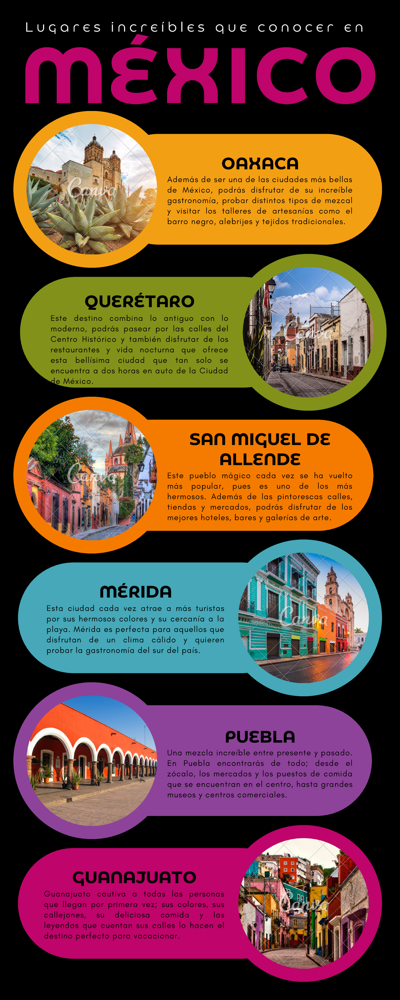

Comida Mexicana
Sabores auténticos, Tradición Mexicana
Tacos al Pastor
Mole Poblano
Tamales

Disfruta de los sabores que representan a México
Oaxaca
Puebla
Mérida

Explora las ciudades más representativas de la gastronomía mexicana
¿Qué es la comida mexicana?
La comida mexicana es reconocida a nivel mundial por su diversidad de sabores, colores y técnicas. Incluye una variedad de ingredientes autóctonos como el maíz, frijol, chile, jitomate y más, combinando influencias prehispánicas con tradiciones culinarias europeas.
Historia de la Comida Mexicana
La gastronomía mexicana ha evolucionado desde la época prehispánica, cuando las culturas indígenas desarrollaron platillos basados en productos locales como el maíz y el chile. Con la llegada de los españoles en el siglo XVI, se introdujeron nuevos ingredientes como el arroz, la carne de res y cerdo, y especias, que se fusionaron con la cocina local para crear los platillos que conocemos hoy.
La cocina mexicana fue declarada Patrimonio Cultural Inmaterial de la Humanidad por la UNESCO en 2010, destacándose por su importancia cultural e histórica. Platillos como los tacos, enchiladas y el pozole son representativos de esta rica tradición.
Platillos Famosos de México
Tacos al Pastor: carne de cerdo marinada, servida en tortillas de maíz.
Mole Poblano: una salsa compleja hecha con chiles, chocolate y especias.
Tamales: masa de maíz rellena de carnes o vegetales, envuelta en hojas de maíz.